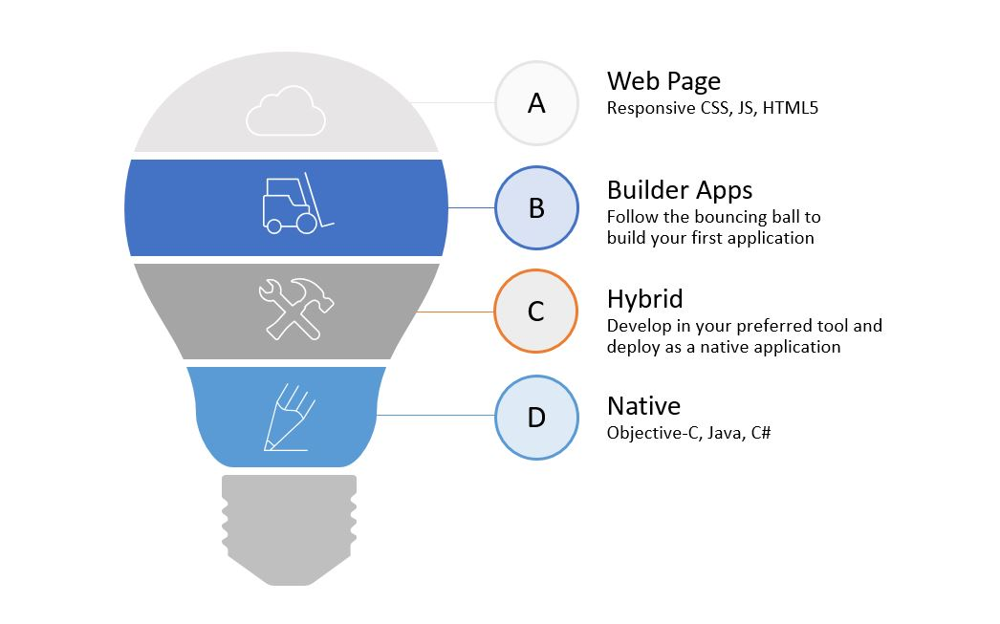
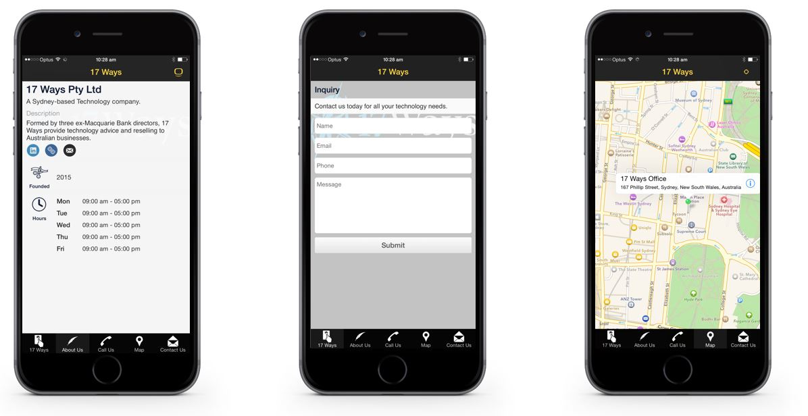
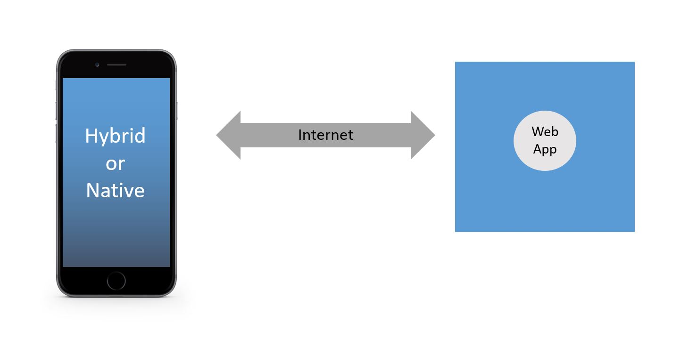

More than 30,000 new applications are added to the Apple Store every month and there are 1.5m apps available as of July 2015. The Google Play store has even more with 1.6m apps. Social media is now 60% attributed to mobile and tablet platforms and even conservative estimates suggest that 30% of all web traffic originates from mobile devices. Some estimates put it over 60%.
As we will see below it is now quite easy to develop an app and push it to an online store, so how many of these are 'real' applications and how many are 'Hello World' apps is another question. Nonetheless it is undeniably important for most organisations to be able to push their content to mobile devices.
Interestingly Google now assesses websites based upon how they perform and render on smartphones and will downgrade a site in its rankings if it isn't built properly for smaller screens. This means that even if you are only targeting desktop and laptop users with your site, they won't be able to find you unless the site works on a smartphone.
Before you go all the way into building an app, ask yourself what it is that you are trying to achieve.
Remember, even if you have an app, that doesn't mean people will want to use it. If your app has exactly the same information as your website then people are much more likely to visit your website than to download and install yet another app on their already crowded smartphone screen. You need a compelling reason for people to use your app or you are wasting time and money on building one.
The UN estimates that more people have access to mobile phones than toilets. You need to make sure that your message works properly on a mobile platform.
Here are a few common mistakes and alternatives that you should consider first:
Mobile app users have the attention of a goldfish. If you develop an app it needs to be compelling.
Consider for example that you run a bar and decide that an app with some information about your bar and a price list with opening times would be a nice thing to have. Think how quickly that app will go stale compared to an app that uses geolocation to recognise that you are near the bar and gives you directions, has the ability to advertise specials, has a clickable menu to order drinks or food and a built-in loyalty program that gives you a free drink every 5 visits.
So you have decided that social media isn't enough for you and you want to get your content to mobile devices. How can you do it?
You almost certainly have a website already if you are considering building an app. Why not extend the functionality of the website to do what your app will do? Hopefully you have built your website in a technology that is 'responsive' (i.e. adapts to the size of the screen that it is being shown on). Most content management systems like WordPress use responsive technologies. Alternatively if you build the site yourself you can use a framework like bootstrap to ensure that your site looks good on a desktop or mobile screen. This site is built using bootstrap as you can see in the screenshots below.
| Pros | Cons |
|---|---|
| Easy to develop if you already have a website. | Not as obviously aimed at mobile users as an app. |
| Not intrusive. | Not as responsive and immediate as an app. |
| Works for non-mobile too. | Not suitable for fullscale applications. |
| No updates to worry about. | Won't work offline. |
| No additional development tools and licences needed. |
There are dozens of websites that you can use to generate a fully functional app for iPhone or Android with a few clicks of your mouse.
Some of the better ones include Como, Appsbar and AppMakr.
This is the sort of thing that you can knock up in only a few minutes. This example is from Como.
The problem with these tools though is that you really can't do much more than just put together basic features. They are good for contact information and simple forms but they are not suitable for building more advanced applications. As mentioned above, if you are going to keep your customers using your app, you will need to give them more than just photos of your cat looking cute.
| Pros | Cons |
|---|---|
| Very Easy to build. | Not suitable for real applications. |
| Integrates with social media. | |
| Deployment is taken care of for you. | |
| No development skills required. |
Roll up your sleeves, get a bucket of coffee and stack your top pocket with pens. Its time to do some real development.
You will need to do some actual programming for this and set yourself up with a proper development environment. The good news however is that the tools are very advanced and there are tons of resources on the internet to help you get started.
Apple's choice of development language is Objective-C. It's not so much a language as a series of grunts.
For iPhone and iPad development you will need a Mac. It is the only platform supported. You'll also need to download XCode which is massive, and sign up to Apple's developer program which is $100 per year. That is a lot if you only want to play with it but a real bargain for serious developers given everything that it will give you access to. The less said about Objective-C the better. It is an awful language but you really don't have any alternative. There are a few tools that can generate code for you from higher level languages but they aren't mainstream options. If you want to go down this path then take a look at PyObjC which provides a bridge from Python to Objective-C. You will still need to learn a fair bit of Objective-C in order to make it work, and it does drag Python down towards the level of Objective-C, but it is a slight improvement. Apple recognise the problems with trying to develop apps in Objective-C and have introduced a new language, Swift, however adoption is slow and you will find it harder to get developers with Swift skills. It is also possible that Swift will fail and end up being unsupported while with the huge volume of apps out there, it is hard to see that happening to Objective-C.
In case you think I am being a bit unfair to Objective-C, have a look at this code which is the top answer on stackoverflow for the question "How do I reverse an array in Objective-C?"
@implementation NSArray (Reverse)
- (NSArray *)reversedArray {
NSMutableArray *array = [NSMutableArray arrayWithCapacity:[self count]];
NSEnumerator *enumerator = [self reverseObjectEnumerator];
for (id element in enumerator) {
[array addObject:element];
}
return array;
}
@end
@implementation NSMutableArray (Reverse)
- (void)reverse {
if ([self count] <= 1)
return;
NSUInteger i = 0;
NSUInteger j = [self count] - 1;
while (i < j) {
[self exchangeObjectAtIndex:i
withObjectAtIndex:j];
i++;
j--;
}
}
@end
Yup, that gibberish does the same thing as this bit of Python:
a=[4,6,5,1,8,3] a.reverse()
Objective-C is only one part of the puzzle though, you will also have to learn Cocoa which is the API into the Apple world. If you like history you will find that a lot of the Cocoa API has calls with NS in the name, like NSEnumerator and NSUInteger above. The NS stands for NeXTSTEP which was the operating system that Steve Jobs developed when he left Apple in 1985 and formed NeXT. Apple bought the company and Jobs with it in 1997 and replaced their dated operating system with the nice stuff they got from NeXT. Back in the 80s having to allocate and free up your own memory was all the rage, as were scary perms and pogo sticks, but unfortunately we've ended up keeping the wrong one out of those three.
If you decide to develop for Android then it is slightly easier as you can develop in Java. You will need to learn and use the Android SDK but again the tools are quite advanced. You also aren't restricted to developing on a Mac and you don't need to pay anything to get started.
If you think its still the 90s you can build an app for Blackberry using Java and their SDK as well. There is also probably an SDK for Windows Phone apps but frankly it wouldn't make much difference if there wasn't. My brother is the only person I've ever heard of who uses a Windows Phone and I think he got it free.
Whatever platform you develop for, none of your code or skills will be transferable to any other platform.
| Pros | Cons |
|---|---|
| Fastest, highest function solution. Able to do anything. | Long lead time on development. |
| Good access to developers across all platforms. | Not portable. Will only work on the platform for which you develop. |
| Very advanced development tools with good debugging and performance analysis. | Requires low level programming and a full understanding of the APIs provided. |
Hybrid tools offer the promise of developing once and deploying to multiple mobile platforms. This is a very appealing option if you want to develop for more than one platform at the same time. It does however come with some downsides. Firstly, you are going to have to pick a technology in a fast moving market, which is always a problem for early adoptors. Secondly the abstraction layers introduce performance overhead, so if you aren't careful your app won't work well, especially on older devices. The third major problem can be finding experienced developers, although this may not be too big an issue if you pick a tool that uses a well known technology such as Java or HTML5.
Actually there are lots of ways to do this, but let's look at one of the leading products, Phonegap, and see how it works. The basic premise is that you can now do a lot with HTML5, CSS and JavaScript running inside a browser. What if we took all of that and ran it inside the same sort of container as the browser but without the browser controls (back, history, address bar, etc) and with access to some of the things that browser isn't allowed to do, like using the camera and talking to other apps.

So now you can basically build an app that goes to the edge of the screen without the browser being present, but you can use all of the nice things that you used to build your web pages plus you can use the Phoneapp API to do the things that a native app can do.
Initially there was quite a lot of downside to this kind of approach. The classes that implement the browser features (UIWebView for IOS and Android.webkit.WebView for Android) were not built to be full app environments, they were intended to allow you to show some HTML inside a real app. As such they didn't perform very well and were missing things such as Just In Time (JIT) compilation for JavaScript. This has improved and now that this type of hybrid app is using it in this way, there is more effort to improve performance. The second issue was that most web developers were addicted to frameworks such as DOJO and jQuery. These are quite big libraries and using them impacted performance while not using them impacted productivity and hurt the feelings of the developers. Thankfully now there are options such as jQuery Mobile and Sencha Touch which are built for the mobile world. They even allow you to build cut down runtime versions that only have the features you are actually using.
All of this innovation is making hybrid development much more feasible but there are still obstacles to overcome to make this as easy as we would like. Also don't believe the "write once, deploy everywhere" hype as you will still need to do a lot of testing and tweaking across the different platforms.
It seems like every week there is an announcement about some major platform either moving to, or moving away from the hybrid approach. Increased performance and/or productivity is usually the reason in both directions.
If you want to look at this space then in addition to Phonegap you should also consider Titanium, Kony, Xamarin and Icenium.
| Pros | Cons |
|---|---|
| Very customisable, suitable for building any type of app. | Technology is still emerging. Many different players. |
| Uses known languages and tools. | Performance can be poor. |
| Cross-platform without additional development. | Look and feel can be different between IOS and Android. |
Whether you choose to build a native or a hybrid app, for most purposes the mobile environment won't be enough for you, you will need some kind of back end for your application that you access over the web. This is to give you persistence (database) and communication outside your mobile device.
While on the face of it this might seem like a whole load more hassle, in fact it is extremely good news. The back end technologies are very advanced and if you structure your application properly then you can put a lot of the business logic (in theory all of it) in to the back end. This protects you against making the wrong choices in your front end technology as there will be less to port to a new technology if you get it wrong.
Node.js is getting a lot of attention and allows you to write your backend code in the same technology that you are using for your frontend (JavaScript), however personally I'd stick to something more established like Java, Python or PHP. REST seems to be winning as the protocol and JSON as the payload but before I start World War III here, this isn't really the purpose of this article any way. Write it in whatever you like, you won't go far wrong.
| Problem | Description | Solution | Discussion |
|---|---|---|---|
| Content Push to Smartphones | Getting your updates to as many people as possible. | Social Media | Concentrate on your content and the number of subscribers that you can attract. Leave the technology part to Facebook, Twitter and LinkedIn. |
| Searchable and browsable content for mobiles | Social media only really allows you to push simple updates usually with a single message. Here you are building a set of information that you want your customers to be able to browse through. | Responsive Website | Build a website that works effectively on smaller screens. Don't waste your users time with an app if a bookmarked web page will do just as well. |
| Real Application | You have an idea for something that requires serious development. You are building a unique application that your users will want to use regularly. | It Depends | There really isn't a clear answer here. We suggest you do some of your own research before making a decision. Hybrid apps are quite appealing and we lean in this direction, but it isn't by any means clear. Whatever you do make sure you get your backend technology right and try to put as much logic as you can into this layer. |